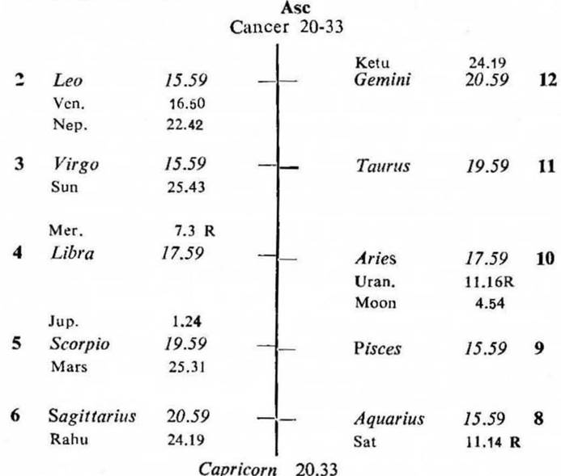
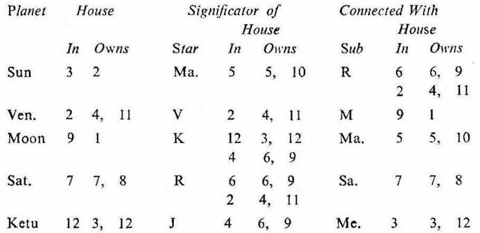

Male. Birth 13-10-1935; Sunday; 1-51 A.M. I.S.T; 23°N 2′, 72°E 35′; Ayanamsa 22° 51′.


Rahu represents its star lord Venus in 2, owning 4, 11; Ketu represents its star lord Jupiter in 4, owning 6, 9. Balance of Ketu Dasha 4Y 5M 4D.
2nd Cusp (self-earning). 1. If the cuspal sub lord of the 2nd be the significator of 2, 6, 10 or 11, the native will have an independent earning during the joint period of the significators of 2, 6, 10 and 11.
2 (a) In this map the sub lord of the 2nd cusp is Sun. As seen from the above table it is the significator of 5 (betting, gambling, risky enterprise), 10 (ambitions, business activities) and connected with 2 (self-earning), 4 (land, factory, possessions), 6 (loans, debts, gain from others), 9 (changes in business activities i.e. more than one business), 11 (friends, supporters, gain, success) and 3 (self-abilities). Hence the native will earn in so many ways as mentioned.
(b) As the cuspal sub lord of 2 (Sun) is the significator of 2, 6, 10 and 11, he will earn money during the period of Sun from 17-3-1960 to 17-3-1966.
(c) The 2nd cusp is jointly ruled by Sun, Venus and Sun. As seen from the above table Venus is also the significator of 2 and 11. So during the joint period of Sun and Venus from 17-3-1965 to 17-3-1966, he will earn much.
7th Cusp (business). 1. If the cuspal sub lord of the 7th be the significator of 2, 10 or 11, the native will gain in business during the joint period of the significators of 2, 10 and 11.
2 (a) In this map the sub lord of the 7th cusp is Venus. As seen from the above table it is the significator of 2 (self-earning), 4 (land, factory, possessions), 11 (gain) and connected with 1 (self) and 9 (changes in business activities i.e. more than one business). So the native will do many types of business
(b) The cuspal sub lord of 7 Venus is the significator of 2 and 11; it is also the star lord of the 2nd cusp. So he will gain in business during the joint period of Sun and Venus (17-3-1965 to 17-3-1966).
In view of this the native started an independent business during the period of Sun the significator of 2, 6, 10 and 11 (17-3-1960 to 17-3-1966) and he earned much during this time. In the sub period of Venus the significator of 2 and 11 (17-3-1965 to 17-3-1966) his earning was substantial and to his satisfaction.
7th Cusp (partnership business). 1. If the cuspal sub lord of the 7th be the significator of 8 or 12, the native will lose in business during the joint period of the significators of 8 and 12.
2. In this map the cuspal sub lord of 7 (Venus) is no doubt the significator of 2 and 11. But its star lord (Venus) and sub lord (Moon) are aspected by the owner of 8 (misfortune) and the natural malefic Saturn which owns and occupies 7 (partnership business). Moreover, the sub lord Moon is also aspected by the owner of 12 (loss) Mercury. Thus the cuspal sub lord of 7 Venus is connected with 7, 8 and 12 and it denotes loss in the partnership business. So the native will lose in the partnership business during the joint period of the significators of 8 and 12.
11th cusp (out come). The sub lord of the 11th cusp is Ketu. As seen from the above table it is the significator of 6 (debts, separation of the partner) and connected with 12 (loss, native separating from the partnership, liabilities). So the cuspal sub lord of 11 denotes loss and separation of the partners. This will happen during the joint period of the significators of 6, 8 and 12.
The 7th cusp is jointly ruled by Saturn, Moon and Venus; while the 11th cusp is jointly governed by Venus, Moon and Ketu.
As seen from the above table and as already discussed in the previous paras Moon, Venus, Saturn and Ketu are connected with 6, 7, 8 and 12.
Saturn is the significator of 6 and connected with 7 and 8. Moon is the significator of 12; its sub lord Mars is aspected by Saturn, so Mars is connected with 7 and 8; consequently Moon is said to be connected with 7 and 8.
The next after Sun the period of Moon starts from 17-3-1966 and the sub period of Saturn commences (earlier than Venus) from 17-6-1970. In the sub period of Saturn the inter period of Ketu begins (earlier than Venus) from 8-12-1970. All these three planets are the significators of and connected with 6, 7, 8 and 12. So during the joint period of Moon, Saturn and Ketu (8-12-1970 to 11-1-1971) both the partnership and the partnership business will come to an end due to loss, heavy debts and increased liabilities when the transit agrees.
The native closed the partnership business in the last week of December 1970. By this time Sun was transitting in Sagittarius 7° to 11° in the star Ketu (the inter period ruler); Saturn in Aries 22° 59′ R to 22° 44′ R in the sub of Saturn (the sub period ruler); Ketu in Leo 3° 11′ to 3° 0′ in its own star.